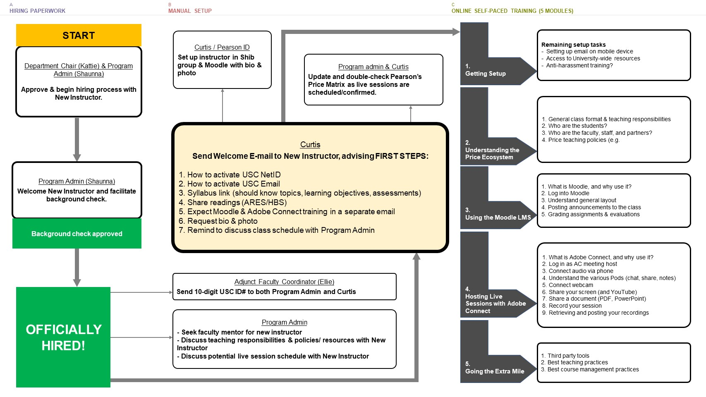
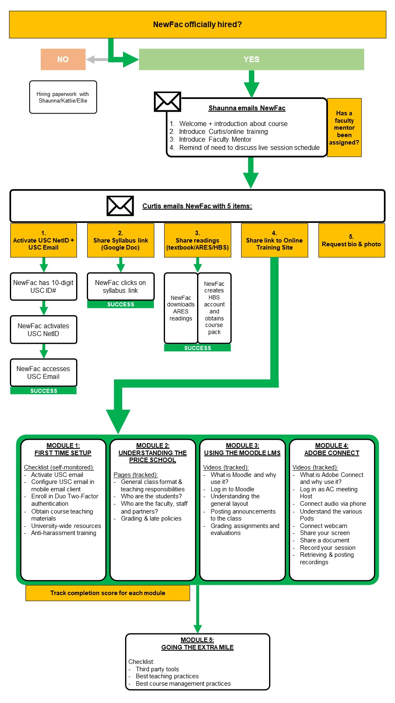
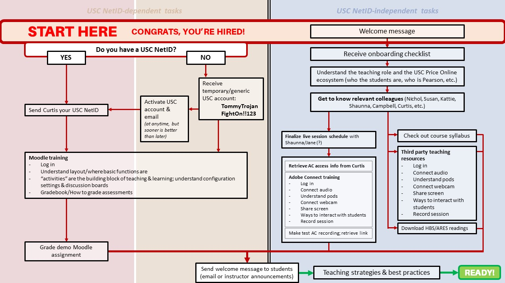
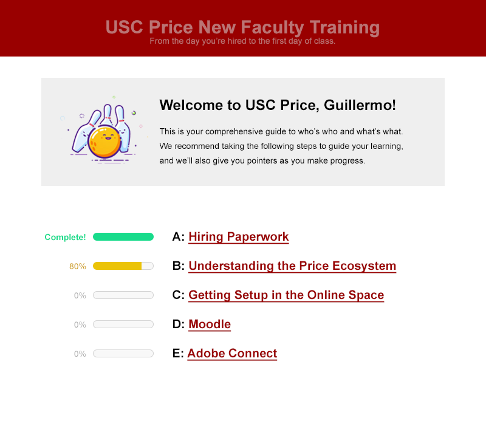
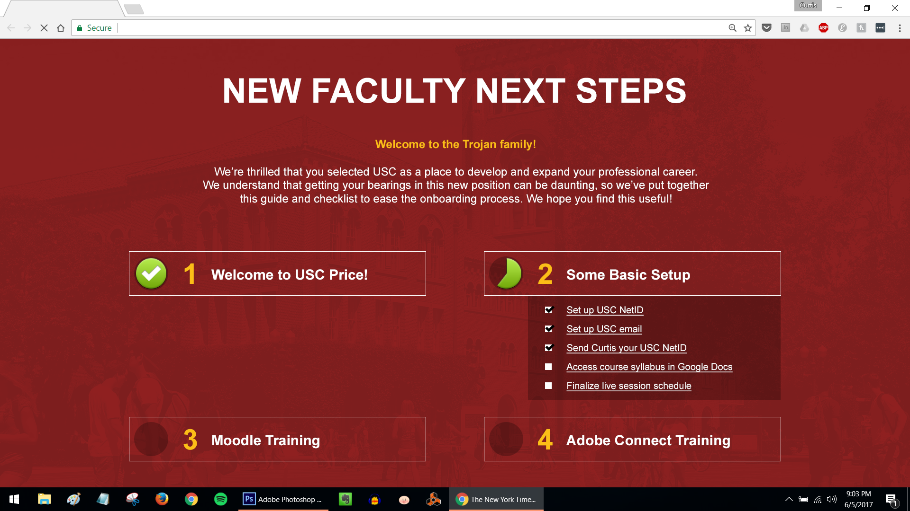
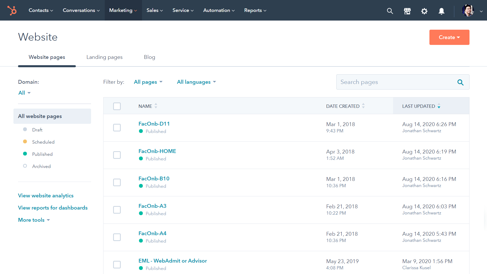
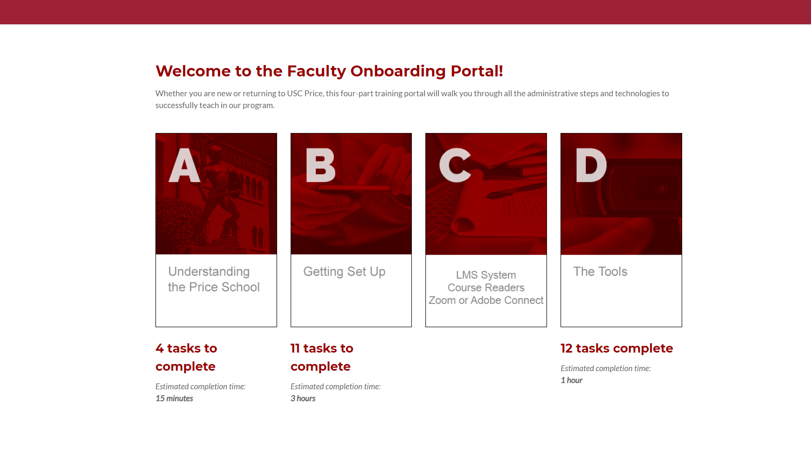
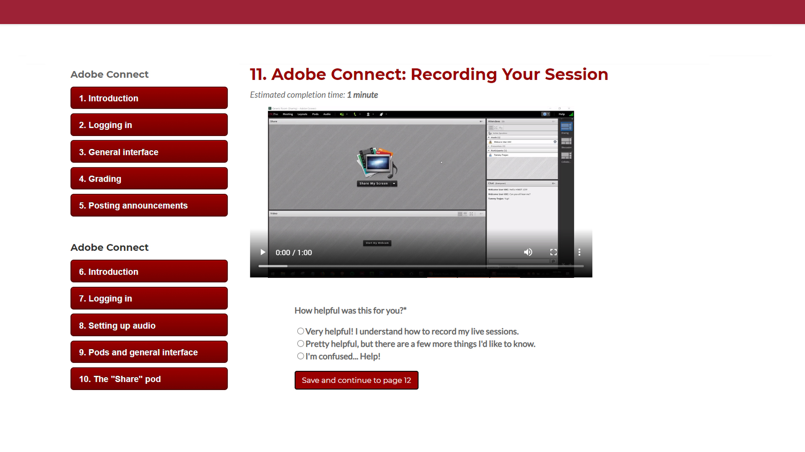
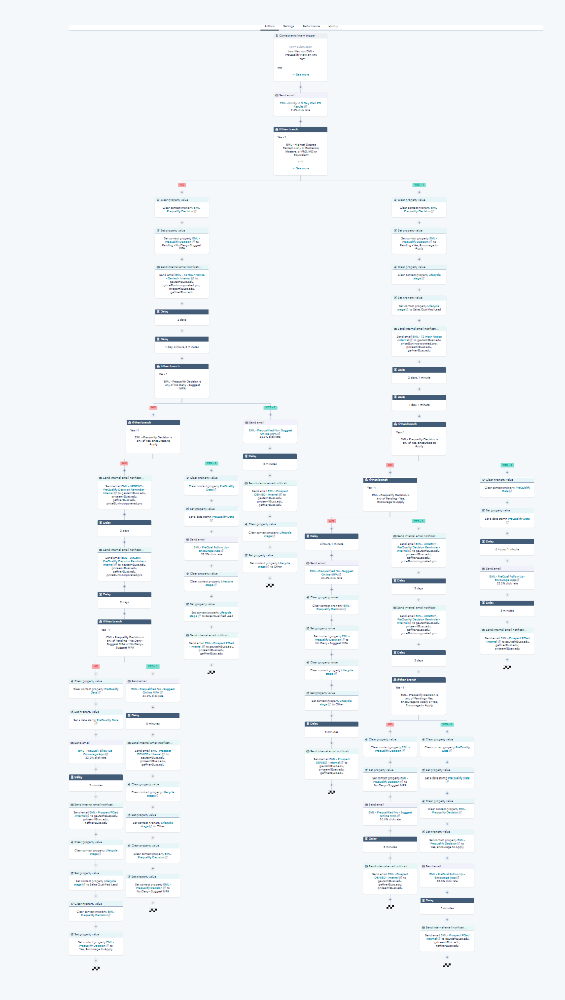
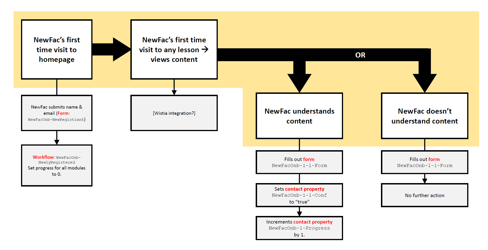

EMHA & MPA Online Faculty Onboarding
A HubSpot-powered automated onboarding portal that consolidated USC Price School's fragmented, multi-office adjunct faculty onboarding into one adaptive experience. Self-reported confidence ratings after each module triggered personalized follow-up workflows — from curated resource bundles to one-on-one meeting invitations — without any manual staff monitoring. First-day technical support tickets dropped dramatically, and faculty explicitly praised the system for respecting their time.
Problem & Learner Context
Each year, a dozen new adjunct faculty join USC Price's online graduate programs — typically with limited experience teaching in a fully asynchronous environment. Without the social scaffolding of a physical campus, these instructors were left to navigate a fragmented and often isolating onboarding process largely on their own. Three distinct problems characterized the status quo.
Isolation. New instructors had little more than a few preliminary phone calls with HR and the Program Coordinator, plus functional emails walking through access procedures. The standing invitation to "reach out if you have any questions" added to the burden by forcing instructors to self-diagnose whether they were genuinely stuck or had simply overlooked an instruction. Those who were already confident self-starters had an outsized advantage over those who weren't.
Fragmentation. Different offices at USC Price managed different onboarding tasks — compliance trainings, email setup, LMS orientation, course content access — with little awareness of each other's requirements. One office might push outdated instructions after a tool update; another might repeat requirements an instructor had already completed. The instructor bore the greatest burden of coordination, with no consolidated view of their own progress.
One-size-fits-all training. Two hour-long sessions on Moodle and Adobe Connect were required of all new faculty two weeks before the semester. Most content was not targeted to each instructor's actual comfort level or specific teaching context, resulting in wasted time for those already proficient and information overload for those who weren't.

Original onboarding process map spanning three offices: Hiring Paperwork, Manual Setup, and Online Self-Paced Training
The Real-World Performance Gap
Beyond administrative setup, operational reality in our online graduate learning environment required high technical and logistical precision. Faculty were expected to self-navigate a complex ecosystem: locating specific course URLs, managing live session rooms in Adobe Connect, and correctly distributing custom course readers or PDF packages. Because faculty lacked a functional baseline operational standard, the first few weeks of every semester became a high-stress bottleneck defined by avoidable technical and logistical slip-ups.
The Business & Operational Impact
The lack of structural onboarding posed a severe threat to operational efficiency and brand reputation. Mundane technical errors single-handedly delayed live sessions or resulted in inaccurate logistics being passed to students. Crucially, common user errors—such as instructors refusing to wear headphones—caused grating audio feedback during live broadcasts. To mitigate this, internal design staff had to be physically present at every single introductory live session to troubleshoot and coach instructors in front of their own students. This process induced immense stress for the instructors, degraded the student experience, and created an unsustainable, unscalable drain on our team's operational resources.
My Design Decisions & Rationale
The core insight driving the solution was that onboarding in an online environment needs to do the social work that a physical campus does automatically — and that this requires responsiveness, not just more information. That framing led to two foundational design decisions.
First, all onboarding content — previously distributed across separate offices — was centralized into a single HubSpot-based experience. This gave instructors a unified, transparent view of their own progress and eliminated the confusion caused by overlapping office responsibilities. HubSpot was chosen specifically for its workflow automation capabilities, which allowed the system to respond to instructor behavior in real-time without requiring manual monitoring from staff.
Second, an iterative design process was adopted because of a key constraint: certain tasks could only be completed after others were finished. For example, an instructor could only access Moodle course content after their USC NetID was provisioned — a step outside the design team's direct control. Mapping these dependencies forced the experience to be structured around each instructor's realistic situation rather than an idealized linear sequence. Each design iteration cycled between ideation, wireframing, and testing with actual faculty, surfacing constraints that weren't visible from planning documents alone.


Two successive redesigns of the onboarding flow — moving from a fragmented multi-office diagram toward a single adaptive decision tree
These workflow refinements directly shaped the portal's visual design. Each iteration of the UI prototype — developed in parallel with the logic redesigns — progressively streamlined the instructor experience, moving from a simple progress-bar checklist toward the fully adaptive, confidence-driven interface of the final build.


Portal mockup iterations from v1 progress-bar tracks (left) to a v2 checklist homepage and v2 task detail page with embedded video and confidence self-rating
Bypassing the Rigid OPM Blueprint
A significant portion of our online learning operations was historically tied to an institutional partnership with a major Online Program Manager (OPM), Pearson Mbinet. OPM frameworks are typically rigid, high-cost, "one-size-fits-all" ecosystems that often fail to align with the unique programmatic needs of a specific school. Rather than accepting an outsourced, suboptimal fit, I championed a homegrown solution built within HubSpot to cut out the excess logistical procedures and essentially extract the noise from the signal.

HubSpot website pages dashboard — all published faculty onboarding pages, built and managed independently of the OPM
Strategic Stakeholder Navigation
To navigate a sensitive vendor landscape and manage underlying institutional tensions, we initiated and deployed this onboarding system as a parallel pilot. We offered instructors an explicit choice: they could follow the rigid, standard OPM onboarding path with an external account manager, or opt to self-onboard at their own pace using our automated homegrown system. This strategic positioning framed the project not as an outright rejection of the vendor, but as a lean, cost-effective pilot designed to evaluate institutional autonomy and prepare the school to eventually break free from a restrictive OPM contract.
Project Walkthrough & Highlights
The final system had two defining features: the centralization of previously fragmented onboarding content into one coherent experience, and a layer of logic-driven automation that enabled personalized — but non-invasive — support based on how each instructor engaged with the system.


Final live portal — module homepage with A/B/C/D onboarding tracks (left) and an Adobe Connect lesson page with embedded screencast and confidence rating
HubSpot workflows were the vehicle for this personalization. One workflow assessed instructor comfort after each onboarding module: at the conclusion of a task, instructors rated their perceived confidence on a 1–5 scale. Based on their cumulative score, the system automatically triggered varied responses — from a warm invitation to schedule a one-on-one meeting, to a curated set of supplemental resources, to a brief virtual affirmation. A second workflow tracked time since last login; if an instructor had been absent for more than seven days, a gentle nudge email was automatically sent to re-engage them — without ever requiring a staff member to manually follow up.
These automations were designed to feel supportive rather than surveillance-like: the goal was to replicate the informal check-in a colleague might offer in a physical office, at scale and without administrative overhead.

HubSpot master automation workflow — branching logic routing instructors through qualification, re-engagement, and follow-up sequences
Logic-Driven Branching Architecture
The core engine of this experience is its backend conditional logic. Rather than navigating a linear sequence of pages, the instructor's journey is dictated by a multi-node decision tree. By leveraging self-reported feedback at key diagnostic nodes, the system adapts to the user's specific baseline. A returning instructor can bypass basic administrative setup, while an instructor needing help assembling a course reader from the Harvard Business School collection is automatically routed to a dedicated, step-by-step instructional pathway.

Backend conditional logic — a NewFac portal visit triggers a confidence self-assessment, whose outcome sets HubSpot contact properties and routes follow-up actions
Curated Micro-Learning Snippets
Within each branched node, information is highly chunked. Long-form compliance text was replaced with targeted micro-learning elements, including brief, contextual screencasts that visually demonstrated high-risk tasks—such as configuring Adobe Connect audio parameters to prevent classroom audio feedback loops before the first live broadcast.
Results & Evidence of Value
Operational Stabilization & Ticket Reduction
Given the selective, specialized nature of graduate faculty cohorts, quantitative success was evaluated not by massive sample sizes, but by the direct stabilization of our operational environment. The primary metric of success was the drastic reduction of day-one technical issues and support tickets. Following the deployment of the portal, support interventions dropped noticeably from consistent double-digit panics down to isolated, single-digit edge cases.
Qualitative Faculty Validation
The most compelling evidence of value came through direct faculty feedback. The onboarding portal received explicit accolades and validation from a surprising number of instructors who thanked our team for respecting their time and setting them up for genuine classroom success. Multiple faculty members specifically expressed profound relief at being bypassed around the traditional, tedious OPM onboarding process.
Reflection & Lessons Learned
Infrastructure vs. Cost Sustainability
From an instructional and behavioral standpoint, every engineered component of the portal successfully achieved its objective, rendering the pilot an internal triumph for our department. However, an honest post-mortem highlights the cost of our infrastructure. HubSpot served as an exceptionally powerful, reliable engine to prove our concept and secure a highly visible win without technical failure. Yet, its licensing fees are premium.
The Architectural Pivot Plan
If given the opportunity to build Version 2.0, I would look to optimize the technical stack by migrating to a leaner combination of independent SaaS tools—such as coupling Typeform's conditional logic engines with Zapier automation workflows. While combining disparate tools introduces additional integration checkpoints and potential vectors for technical error, the substantial reduction in software overhead would make the solution significantly more sustainable and scalable for localized departments lacking corporate enterprise budgets.